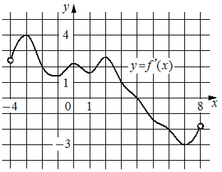

Впишите правильный ответ.
На рисунке изображён график y=f'(x) — производной функции f(x), определённой на интервале (− 4; 8). В какой точке отрезка [− 2; 3] функция f(x) принимает наибольшее значение?

КЭС: 4.2 Применение производной к исследованию функций на монотонность и экстремумы. Нахождение наибольшего и наименьшего значения функции на отрезке
Тип ответа: Краткий ответ
Источник ФИПИ